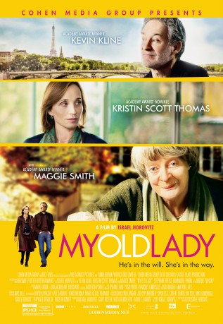

#3975 My Old Lady - Eine Erbschaft in Paris
Alternativ: My Old Lady
 
 IMDB-Wertung: 6.3 / 10
IMDB-Wertung: 6.3 / 10  Metascore: 0
Metascore: 0 
Mathias, a penniless fifty-odd-year-old New Yorker, lands in Paris. Both cynical and at the end of his tether, he looks forward to selling the mansion house his late father owned in the Marais district. But what he finds out there just appalls him: his secretive dad had never told him he had acquired the property as a life lease, a typically French custom he never heard of. As a consequence, not only will poor Mathias be unable to sell the house into cash (at least as long as Mathilde stays alive) but he will have to pay the old lady a pension into the bargain...!
Jahr: 2014
Dauer: 107 Minuten
FSK: 12
Land: USA Studio: Cohen Media GroupTonspuren: DD5.1 - ,
Untertitel:
Auflösung: 1080p (1920x808) Größe: 3921 MB
Genre: Drama, Komödie, Liebe
Regisseur: Israel Horovitz
Drehbuch: Martin Quaden
Soundtrack:
Darsteller:
 Kevin Kline als Mathias Gold
Kevin Kline als Mathias Gold Maggie Smith als Mathilde Girard
Maggie Smith als Mathilde Girard Dominique Pinon als Auguste Lefebvre
Dominique Pinon als Auguste Lefebvre Kristin Scott Thomas als Chloé Girard
Kristin Scott Thomas als Chloé Girard Noémie Lvovsky als Dr. Florence Horowitz
Noémie Lvovsky als Dr. Florence Horowitz Stéphane De Groodt als Philippe
Stéphane De Groodt als Philippe- Stéphane Freiss als François Roy
 Francis Dumaurier als ADR Voice Actor
Francis Dumaurier als ADR Voice Actor- Nastasia Many als ADR Voice Actor
- Michael Burstin als Rabbi on Bicycle
- Elie Wajeman als Man at Gate
- Raphaële Moutier als Woman on Bicycle
- Sophie Touitou als Female Opera Singer
- Christian Rauth als Furniture Dealer
- Delphine Lanson als Femme de Ménage
- Jean-Christophe Allais als Jean-Christophe
- Jocelyne Vignon als Chef
- Nathalie Bernas als Younger Kissing Couple
- Ghislain De Haut De Sigy als Younger Kissing Couple
- Laetiitia Boetto als Chess Player in Café
- Arnaud Perron als Chess Player in Café
- Colombe Anouilh D'Harcourt als Annoyed Woman in Café
- Monique Delamotte als Annoyed Woman in Café
- Dominique Cuadra als Older Kissing Couple
- Pascal Marie-Saint Germain als Older Kissing Couple
- Nathalie Newman als Philippe's Wife
- Alexandra Chandler als Philippe's Daughter
- Josephine Chandler als Philippe's Daughter
- Adrienne Olle als Pot Smoker in Park
- Sylvia Bruyant als Couple with Dog
- Thibaud Herbet als Couple with Dog
- Fernand als Dog
- Ora Yermia als Girl with Roses
- Gillian Horovitz als Gardienne
- Balkissa Toureh als Messenger
- Flo Ankah als ADR Voice Actor
- Michel Chevalier als ADR Voice Actor
- Anouk Dutruit als ADR Voice Actor
- Léa Letellier als ADR Voice Actor
- Cyril Merle als ADR Voice Actor
- Oscar O'Bradaigh als ADR Voice Actor
- Séan O'Bradaigh als ADR Voice Actor
Datei: X:\2014(G-M)\My Old Lady - Eine Erbschaft in Paris (2014, FSK12, 1920x808).mkv seit 08.07.2016
Festplatte: HD 2013(I-Z)-2014(A-Z)
 Es gibt insgesamt 136 Filme in der Gruppe '2014(G-M)'
Es gibt insgesamt 136 Filme in der Gruppe '2014(G-M)'